The Euganean Hills are old volcanoes, and the wines taste like they know it. The bedrock is trachyte and limestone — the same trachyte that paves Piazza San Marco in Venice — and at Vignalta, Michele told us the deepest roots reach ten meters down into it. Bordeaux varieties have been at home on these slopes since the nineteenth century, which is why the reds here speak Merlot, Cabernet, and Carmenère with an Italian accent, alongside local voices like Moscato Giallo, Manzoni Bianco, and Raboso.
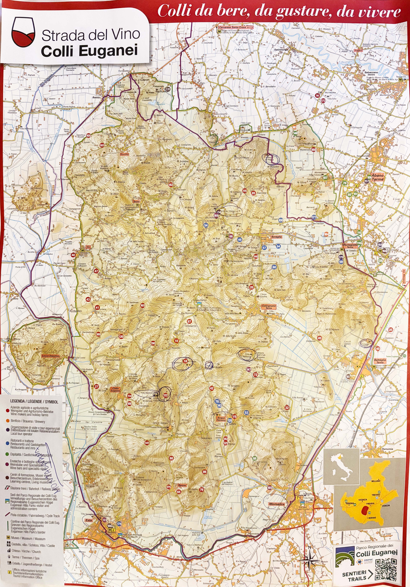
The week opened gently: the obligatory spritz at San Sofia, a wine-led dinner at Anice Stellato, and a glass of Valpolicella at Al Timon to close Day 2. The first bottle of the trip came from the cicchetteria A Na' Certa in Mira on the transfer day: a Farina Valpolicella Classico Superiore at €14 — a genuine bargain when a Superiore at the Finnish Alko runs well north of €20. It also prompted the purchase of an extra suitcase at Ipercity, a decision that only looked wiser as the week went on.
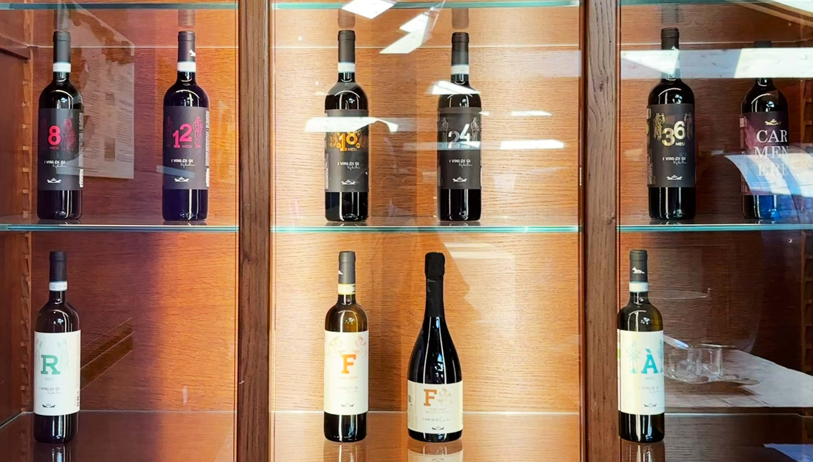
The bigger of the two estates we visited (Day 5): over 270 hectares, 110 under vine, the rest olive groves and farmland, owned by the Rossi Luciani family — the same family behind Le Volpi — and brought back to life from neglect. The facilities are strikingly modern, with the latest monitoring technology over the concrete storage, and the scale shows: tens of thousands of bottles a year. The old cellar keeps its memory too — a slate chalked Merlot DOC Riserva Storica 1996, bott. 1244, under decades of dust.
The tasting, all from the Linea di Gi:
Fior d'Ape Metodo Classico, Moscato Giallo 100%, Millesimato Extra Brut — nothing like sweet proseccos: crisp, dry, and expressive. Moscato Giallo 100% · metodo classico, 24 months on the lees · volcanic-calcareous soil (scaglia bianca) · organic & vegan · 12,5% · producer card →
Àrio, Manzoni Bianco 100% — floral and light, a spring breeze almost. Manzoni Bianco 100% · volcanic slopes, calcareous-clay soil · organic · 13,5% · producer card →
12 Mesi, Merlot 100%, and 24 Mesi, Rosso (Merlot 60%, Cabernet Sauvignon 30%, Cabernet Franc 10%) — the profile shifting to darker flowers, passion and intensity but still floral underneath; very modern, incredibly versatile. 12 Mesi: Merlot 100% · calcareous-marl soil · unfiltered · 14% · producer card → 24 Mesi: Merlot 60%, Cabernet Sauvignon 30%, Cabernet Franc 10% · basaltic soil · unfiltered · 14,5% · producer card →
The verdict: from Monte Fasolo, the sparklings are the most interesting bottles. Home with us went olive oil, the spumante, and the 24 Mesi.
Dinner at the estate restaurant doubled as a second, food-side tasting, following the sommelier's menu suggestions: the Fior d'Ape with the antipasti (uovo poché, tartare), the 8 Mesi Cabernet with bigoli al ragù di corte, and the Carmenère with mustard-and-honey glazed costine di maiale. The pairings earned their keep — the Carmenère really fought off the pork fat, and the lighter 8 Mesi brought the light meat to life. 8 Mesi: Cabernet Sauvignon 60%, Cabernet Franc 40% · red-flake limestone · unfiltered · 13,5% · producer card → Carmenère (Eccellenze di Gi): Carmenere 100% · three years in wood · 14,5% · producer card →
The tasting room walls turn out to double as a small museum of coopering — three plaques with the actual tools of the trade mounted straight onto the boards. They tell the story of the Fasolo family bottai of Torre, on the northern edge of Padova: Pasquale and Virginio, sons of Antonio, took up the craft separately around the mid-1900s from the original family workshop; Pasquale's son Celio gradually took the reins, and the firm became the Premiata Fabbrica Botti e Tini Fasolo Celio — an artisan outfit of never more than three collaborators, making chestnut and oak barrels up to 40 hectolitres, chestnut vats for wine, ash and acacia casks for vinegar, and small oak for grappa. Their biggest commission came in the 1970s: building and installing the cellar full of 14–40 hectolitre barrels for Fattoria Monte Fasolo — the very estate whose wall now keeps their memory. In 1978 Celio was awarded the "La Rosa d'Oro"; the tools on display are on loan from his heirs.
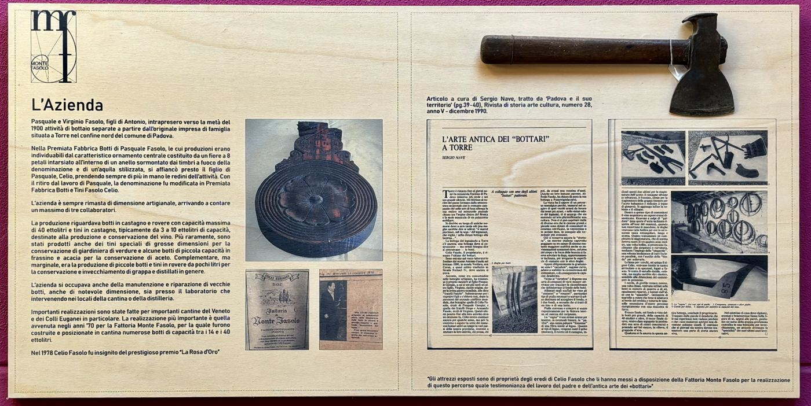
The craft plaques read like a dialect glossary of barrel-making. Staves of chestnut — Slavonian oak for the aging barrels — were steam-bent with the cagna, cooled into shape on the cavaliada, then stacked in open-air towers (casele) to season for at least two years. Soft-iron hoops (serci) were closed with rivets (broche) and hammered home along the barrel with the spasseo wedge; the heads were pegged with robinia (caeci) and sealed with dried bulrush leaves (pavera) spread with clay paste (pastea). And to finish, the signature of the Pasquale Fasolo workshop: an eight-petal flower carved freehand with sgurbie gouges into the front head, inside a crown of rings — breathable varnish for the body, red for the head, gloss black for the hoops.
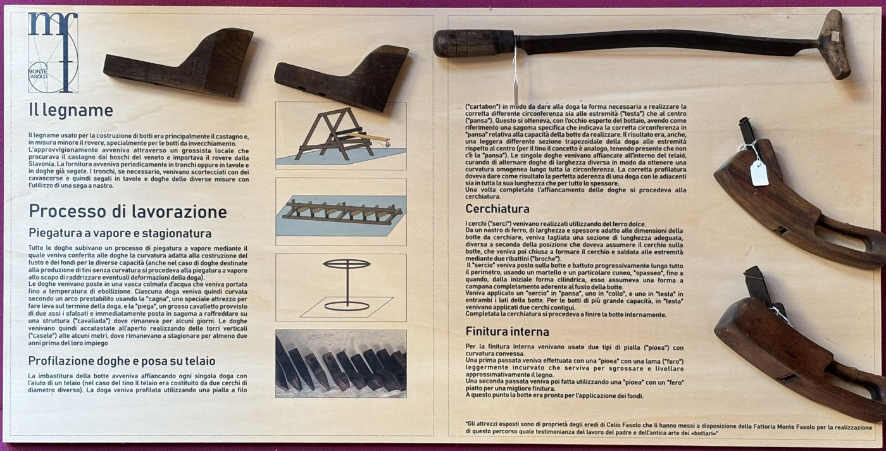
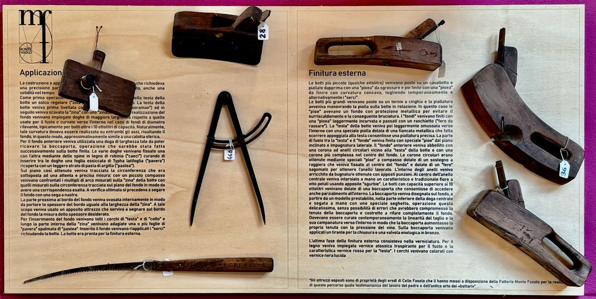
Smaller facilities, bigger reputation (Day 6): two stars in the guide, 230,000 bottles a year off 35 hectares of volcanic slopes. This is where the terroir talk got literal — a wall of bare bedrock left exposed in the new barrel storage to show exactly what the roots are working through. The tasting with Michele — who turned out to be Michele Montecchio, Vignalta's head winemaker himself — became a real introduction class:
Blanc de Noirs Brut Nature, Raboso Friularo — a wild and free sparkling, bubbles of wild northern acidic apples; the wine I'd pair with anchovy cicchetti.
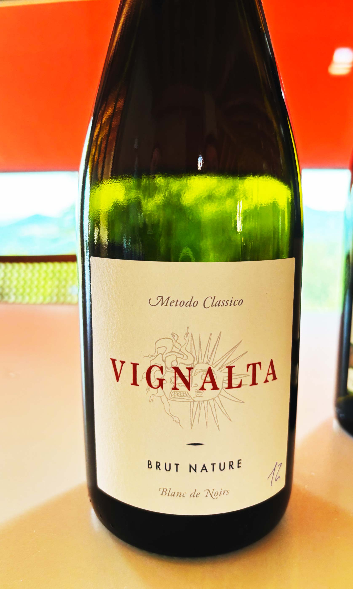
Gemola Chardonnay 2023 — fun, creamy, easy to drink, and somehow American in profile; and rightly so: founder Lucio Gomiero lives part-time in California, where Mount Eden's Santa Cruz Mountains Chardonnay inspired him to make something similar at Vignalta. Michele answered the observation by pulling the actual Mount Eden 2020 off the shelf.
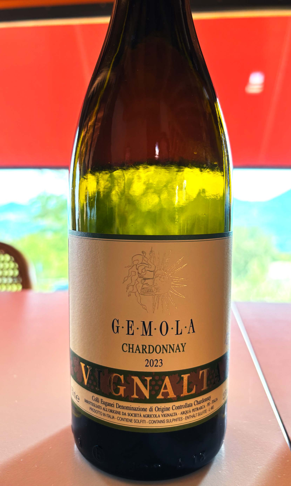
Carmenère Riserva 2021, 24 months in French oak tonneaux — a party in the mouth, spicy and joyful, with the elegance that is the base note of every bottle here.
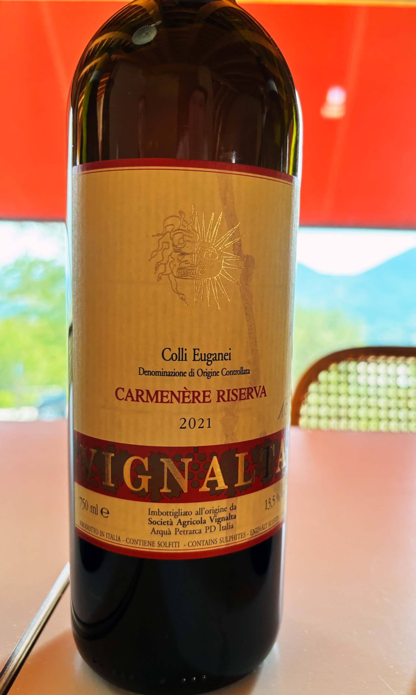
Rosso Riserva 2020, Merlot–Cabernet — the everyday wine: deep and serious but easy to drink.
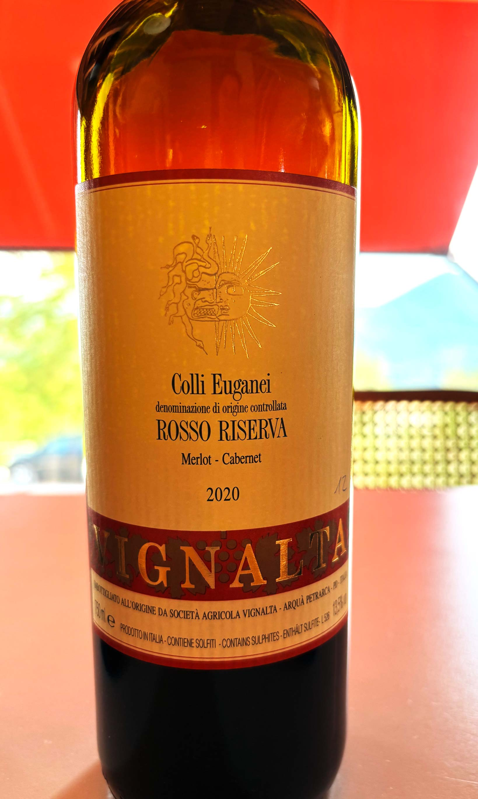
Gemola 2019, Merlot 70%, Cabernet Franc 30% — the signature; the seriousness takes a few steps up, and now we're talking Christmas-table wine.
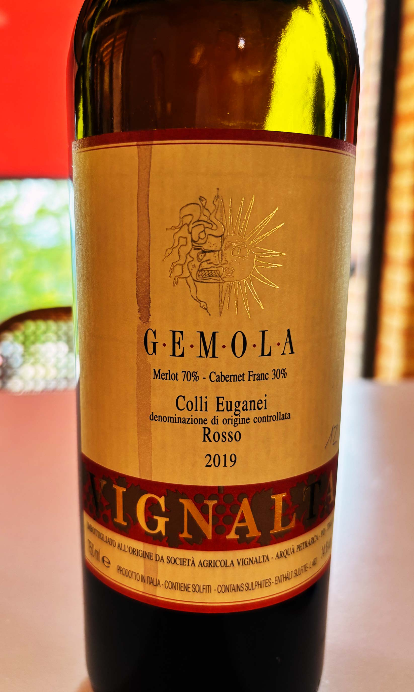
Cabernet Riserva 2011, 100% Cabernet Sauvignon — made simply because it was possible. Not a wine for making money; a wine to keep and let develop.
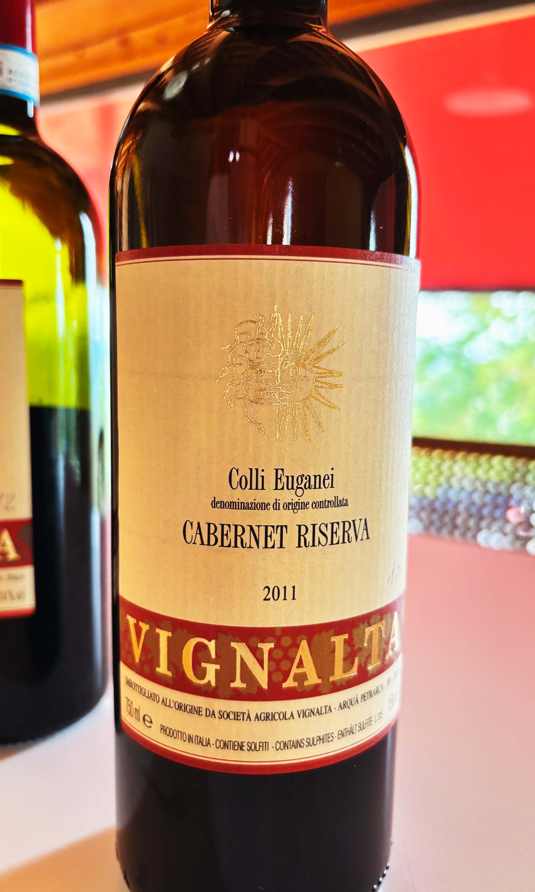
We left with the Carmenère and the Cab 2011 — the one to go to a game with, and the one to go home to for deep discussions.
We only found out afterwards, googling Vignalta from the pool: our quiet, serious guide is Michele Montecchio, Vignalta's cellarmaster — listed in the wine guides alongside founder Lucio Gomiero as the house's winemaker, and described in the Italian wine press as Gomiero's right hand in the cellar. He is a seriously respected name in the circles; we had simply assumed we'd drawn a knowledgeable member of staff.
The backstory makes the visit read differently in hindsight. Gomiero — an architect and radicchio grower who calls himself an "accidental winemaker" — founded Vignalta in 1980 and pioneered high-density planting on the Colli Euganei; since 1994 the wines have been raised in the Arquà Petrarca cellar dug straight into the rock, which is exactly why that bedrock wall stands exposed in the barrel storage. Today the estate is the largest producer of Colli Euganei DOC and Fior d'Arancio DOCG, with agronomist Filippo Scortegagna in the vineyards and Montecchio running the vinification. So the free hand to swap the dessert wine for the Carmenère, the Mount Eden story on tap, and the casual pour of the 2011 — that was the professor teaching his own syllabus.
At Osteria al Guerriero in Arquà Petrarca: an Alla Costiera Biancone (Veneto Tai Bianco IGT) alongside the lasagne, and the Terregaie "Alberto" Metodo Classico with the anchovy pasta — the local sparkling habit holding firm to the very last dinner.
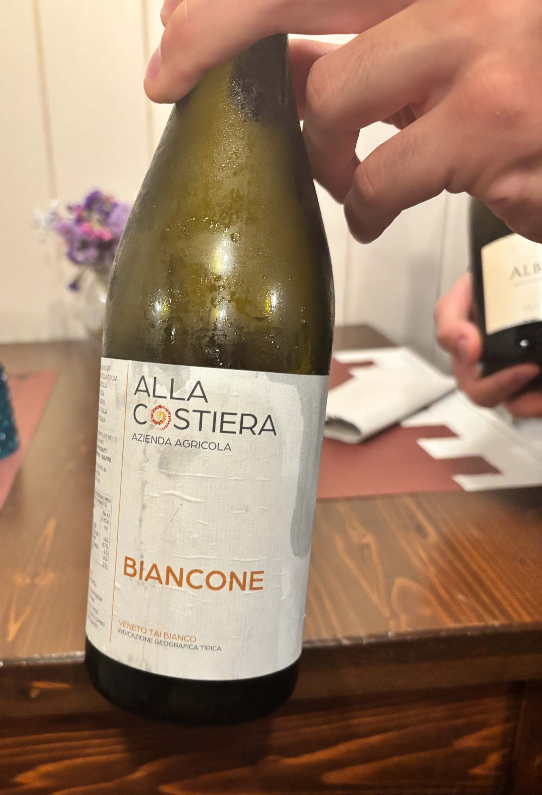
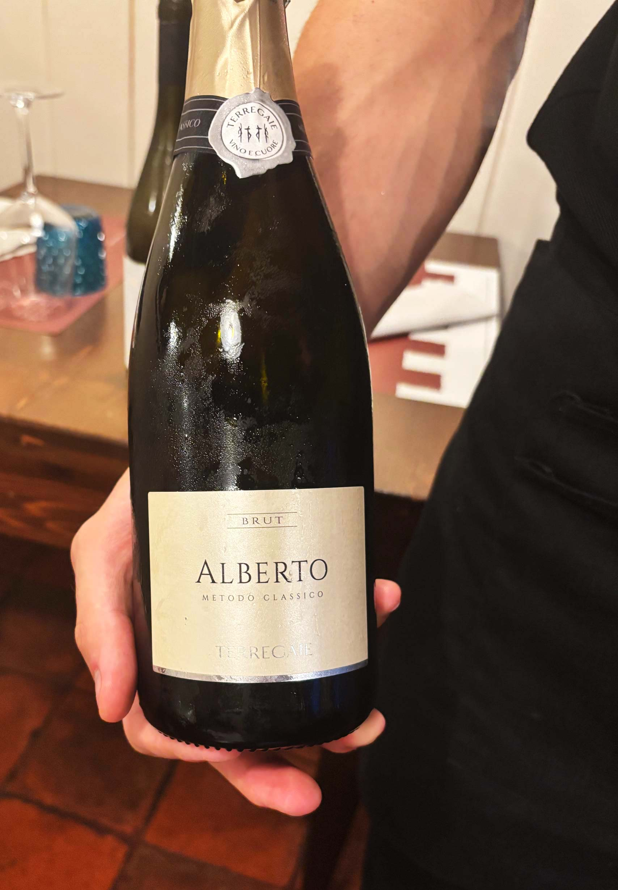
Final count for the extra suitcase: the Farina Valpolicella, Monte Fasolo's spumante and 24 Mesi, Vignalta's Carmenère Riserva and Cabernet Riserva 2011 — plus a bottle of estate olive oil riding shotgun.
Not tied to any one hour of the day — this is everything that came out of pointing a phone camera at display cases in Museo Correr and using ChatGPT as an ad-hoc tour guide. Eight little rooms below, one per topic — swipe or use the arrows to walk through them.
Working out what each case of coins would actually have bought, case by case.
Case one, c. 1700–1750: a quarter-scudo and a quarter-ducat under Doge Alvise II Mocenigo and Doge Silvestro Valier — ordinary spending money, good for a meal at a modest inn, wine, bread, fish, candles, a gondola ride across town. Sitting between them, the real star: a 10-zecchini gold piece. A single zecchino was already one of the most trusted gold coins in Europe; ten of them together was the equivalent of carrying a very large banknote. Most ordinary Venetians would rarely, if ever, have handled one. That one coin alone could plausibly have covered several months of comfortable living, a fine tailored outfit or an excellent sword, a respectable horse, a good piece of jewelry — or about a twelfth of what Canaletto was charging for a painting in the 1730s. Try to pay for lunch at a tavern with it and the innkeeper would have looked at you the way a barista today might if you handed over a €5,000 note.
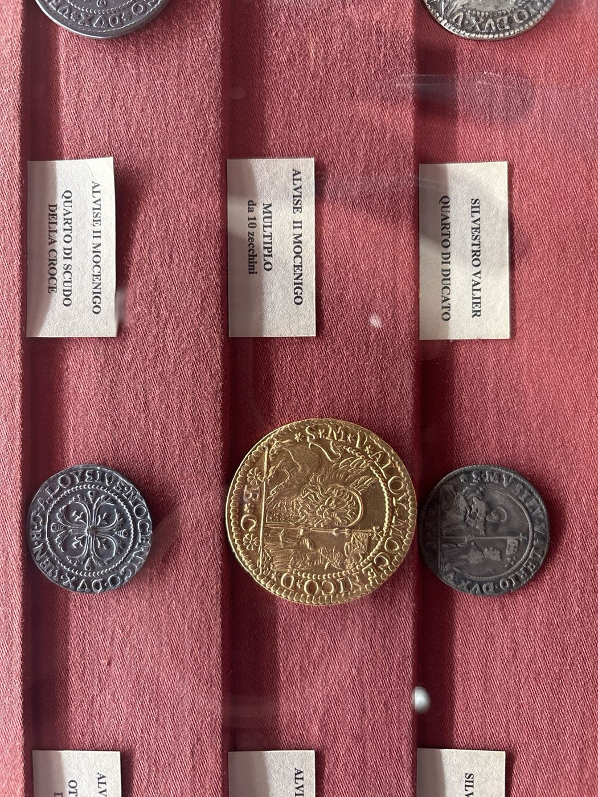
Case two, c. 1550–1600: the small change of Renaissance Venice — tornesello, bezzo, sesino, soldino, on up through 2, 4, 6 and 20 soldi, quattrino, marcello — next to the serious money: a Ducato d'Argento, a quarter zecchino, a full gold zecchino. The tornesello was coffee-and-chestnuts money, a coin to pay a child for running an errand. A few soldi covered a tavern lunch, wine, cheese, candles, a ferry ride, or an hour or two of an artisan's labor. Twenty soldi bought good leather shoes, several nights' lodging, a week's food for a family, or a decent wool cloak. The silver ducato was merchant money — a month's rent, a mule, a bolt of quality imported cloth. And the full zecchino, the coin merchants from London to Constantinople accepted without a second glance, could buy an excellent tailored doublet, months of a laborer's wages, a fine sword, a modest horse, even a small boat. Carry one of every coin in that case and you'd walk through Venice looking like a merchant freshly back from Alexandria — not palace money, but certainly banking-and-long-distance-trade money.
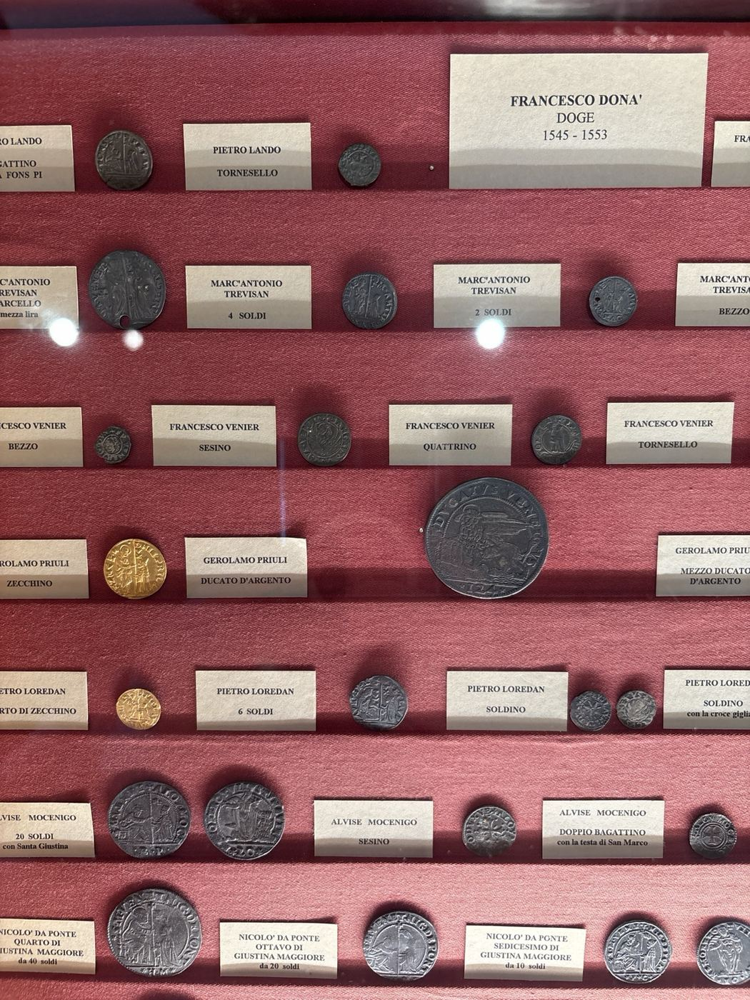
Case three, c. 1720–1789: gold zecchini and large silver coins under the later doges — Alvise III Mocenigo, Carlo Ruzzini, Pietro Grimani, Francesco Loredan, Paolo Renier, Ludovico Manin — Venice in its Carnival-and-Casanova era, no longer the naval power it once was but still extravagantly rich. A single zecchino here bought a fashionable gentleman's entire outfit: velvet coat, embroidered waistcoat, silk stockings, leather shoes. It hired a gondola privately for the day without a second thought. A handful of them financed a dinner for six merchants — oysters, Adriatic fish, game birds, imported wine, pastries, coffee after — with money left to spare, or covered evenings at the opera, a masked ball, the Ridotto casino. Empty the whole case into your pockets in 1775 and, by rough modern feel, you'd be carrying something like €5,000–15,000 in lifestyle terms: not palazzo money, but more than enough to mark you out as merchant class among the gondoliers, masked nobles, Ottoman traders, English Grand Tourists, and — still very much alive at the time — Giacomo Casanova.
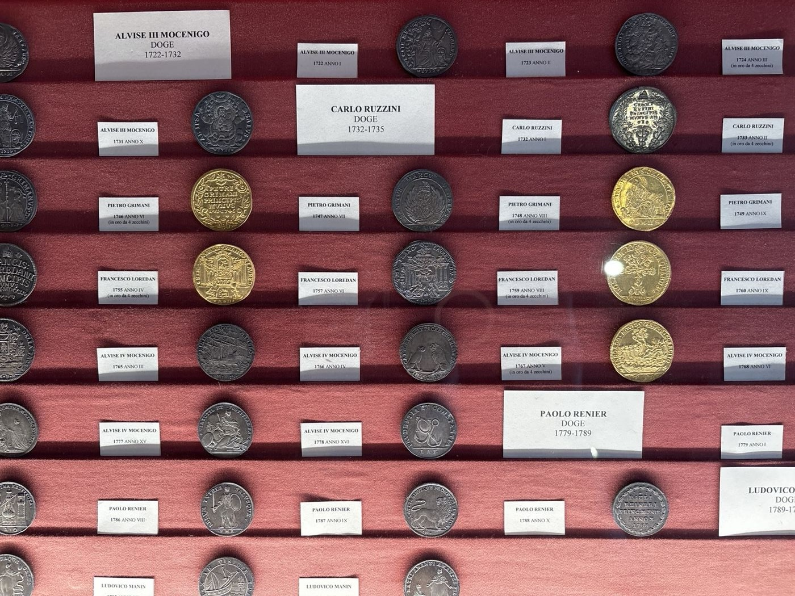
Case four, buried c. AD 840: the Hoard of San Tomà, found in Venice in 1934 — seven Byzantine gold solidi struck under Emperors Theophilus, Michael II, and Constantine, alongside a single Abbasid gold dinar minted in Merv, in modern Turkmenistan, under Caliph al-Mu'tasim. The solidus was the closest thing the early medieval world had to a global reserve currency — stable at about 4.5 grams and 95–98% pure gold for over 700 years, trusted almost anywhere. One of them could buy a donkey, several sheep, months of grain for a family, a fine sword, weeks or months of skilled labor. The dinar is the real showstopper, though: a coin that likely traveled Merv → Persia → Baghdad → Syria → Alexandria → Constantinople → Venice, crossing the length of the known world centuries before Marco Polo. Someone buried all eight coins — a serious fortune, worth a comfortable house or a share in a merchant ship — during a period of Adriatic piracy and Byzantine–Frankish tension, and never came back for them.
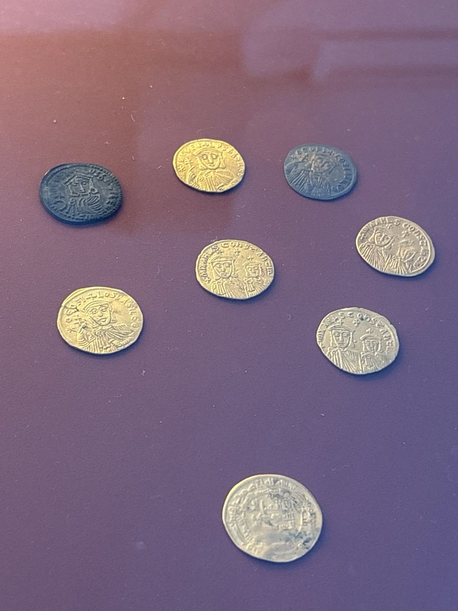
Case five, oldest of all: a heap of nearly 500 Roman bronze sestertii from a hoard found at Martellago, just inland from Venice, spanning Emperor Vespasian (AD 69–79) — who built the Colosseum — through to Trebonianus Gallus (AD 251–253), nearly 180 years of coins all saved together. The sestertius was the everyday workhorse of Roman commerce: bread, wine, wages, tolls, tools, a night at an inn. What's striking is that they're bronze, not silver or gold — by the mid-3rd century, Rome's Crisis of the Third Century had brought constant civil war, barbarian incursions, plague, and heavy debasement of silver coinage, and even small change had become worth saving and hiding. Roughly 500 sestertii was over half a year's pay for a legionary under earlier pay scales — not a senator's fortune, but enough that losing it would ruin someone. Buried, by the look of it, in a moment of real fear, and never reclaimed.
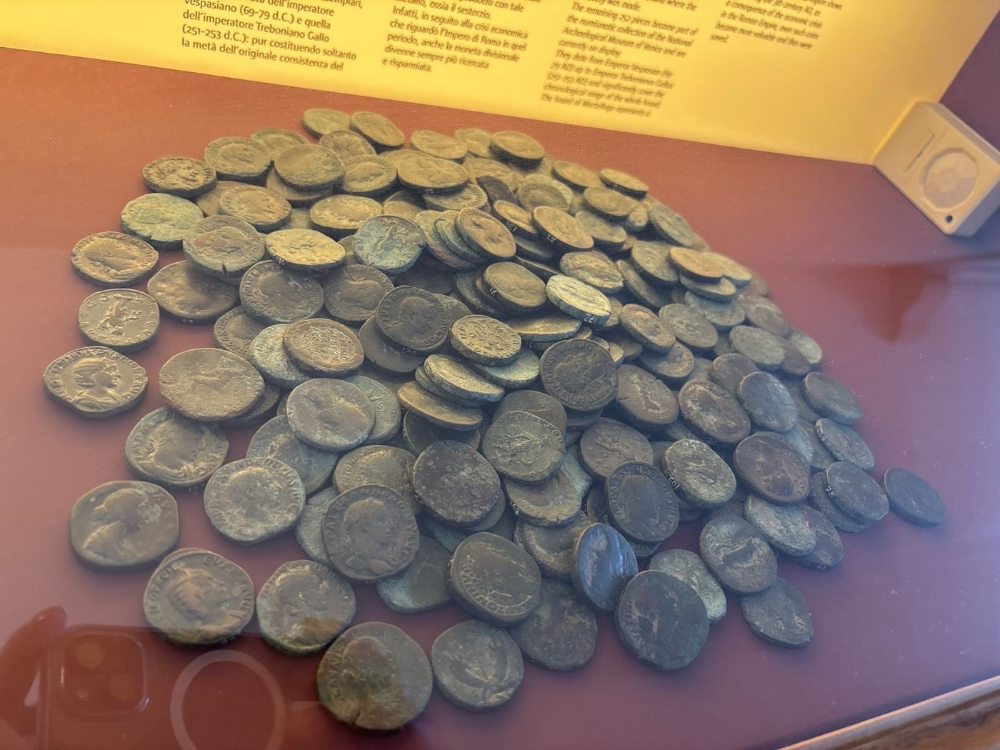
A nice reminder that under the palazzi, Venice's whole reason for being was always money moving through it.
The same game continued one room over, in the gilded ceiling of the Biblioteca Marciana — working out who was who in three of its round paintings (tondi).
The first shows a woman with a crescent moon in her hair, a hunting spear in hand, facing down a man with antlers growing from his head while others recoil around him. The crescent moon marks her as Diana, goddess of the hunt; the antlers give the man away as Actaeon, the hunter who stumbled on her bathing and paid for it — transformed into a stag and, in the fuller version of the myth, torn apart by his own hounds, who no longer recognized him. This panel catches the moment just before that: the punishment landing, the transformation still underway, no dogs yet in frame.
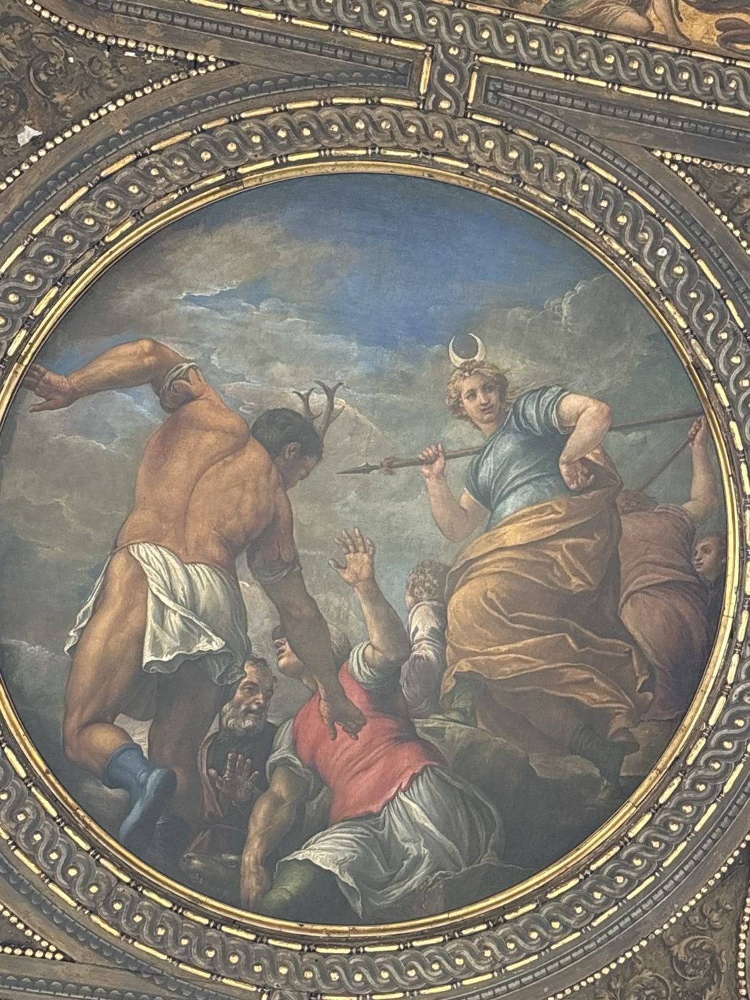
The second is a winged woman crowned with stars, reaching up toward a radiant mother and child descending through the clouds, a trumpet in one hand and what looks like a laurel branch in the other, discarded armor lying below her. The star crown and trumpet point to Fame — Fama — the personification of glory that spreads swiftly and lasts. Read together, the panel is less a specific myth than an allegory: earthly achievement (the armor) set aside in favor of a higher, heavenly reward, with Fame on hand to proclaim and crown the virtuous. Very Renaissance Venice, splicing classical allegory straight into Christian imagery without missing a beat.
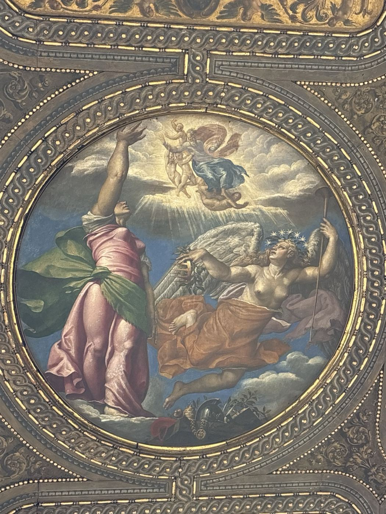
The third is the most crowded: a straining, muscular figure hoists a great sphere overhead — Atlas, though contrary to the popular shorthand he's carrying the heavens, not the Earth, his punishment after the war with the Titans. Around him, a woman holds up an armillary sphere, the standard Renaissance emblem for the study of astronomy; an old bearded man reclines by an overflowing urn with a crocodile at his feet, most likely a river god standing in for the Nile; putti clamber underfoot; a geometer's compass and a hint of pyramids sit off to one side. Stacked together, it reads as a single idea rather than four separate ones: the heavens (Atlas), the science of reading them (astronomy), the ancient wisdom of Egypt (the Nile), and the mathematics underneath it all (geometry) — the whole apparatus of Renaissance knowledge in one tondo.
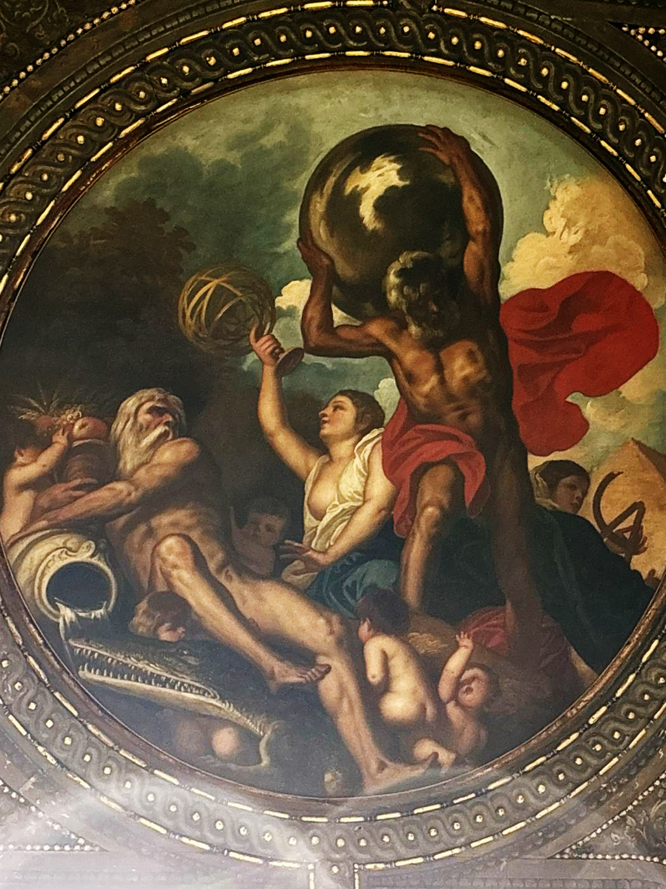
The ceiling was designed by Jacopo Sansovino, its tondi painted by a roster that includes Veronese, Tintoretto, Battista Franco, and Giuseppe Salviati — a who's-who of Venetian Renaissance painting assembled for a library that once held Cardinal Bessarion's donated collection of Greek manuscripts. The whole program amounts to a painted argument: wisdom, virtue, and the study of the cosmos are what qualify a person to govern Venice — a republic that liked to present itself as ruled by learning rather than force. A 16th-century scholar, about to open a copy of Homer or Euclid, would have looked up first and been told, in paint, exactly what kind of person they were meant to become.
The other thing under glass at Correr — and easy to mistake for a good replica rather than the genuine article — is the actual Fra Mauro Mappamondo, drawn in Venice around 1450–60 by the Camaldolese monk Fra Mauro at the monastery of San Michele in Isola. It's one of the great monuments of late-medieval cartography: the known world before the discovery of the Americas, ringed entirely by sea, drawn south-up rather than north-up, with eight wind-roses spaced around the circumference. The whole thing is parchment on wood, the planisphere itself just under two meters across, set into a frame closer to two and a quarter.
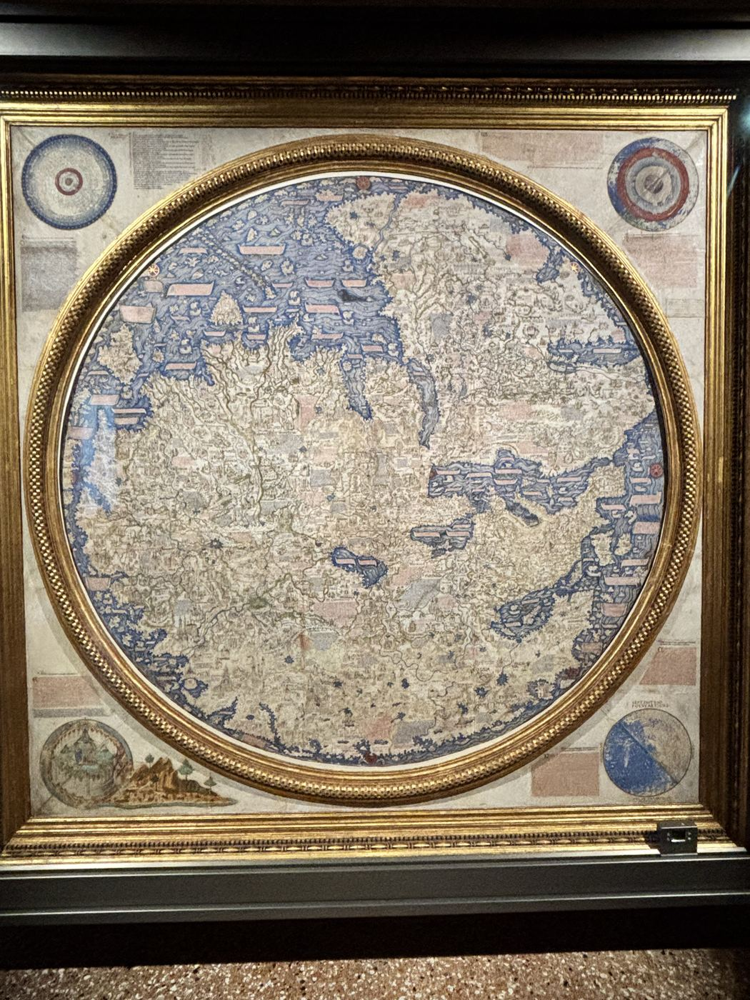
What sets it apart from earlier medieval maps is the sourcing: Fra Mauro pulled from classical, late-Latin, and medieval written sources alongside sailors' and travelers' oral accounts, and covered the surface with hundreds of small illustrated buildings and landscapes plus roughly three thousand inscriptions, all in Venetian vernacular rather than Latin. The four corners carry cosmological diagrams and notes, including a depiction of the Earthly Paradise illuminated by Leonardo Bellini.
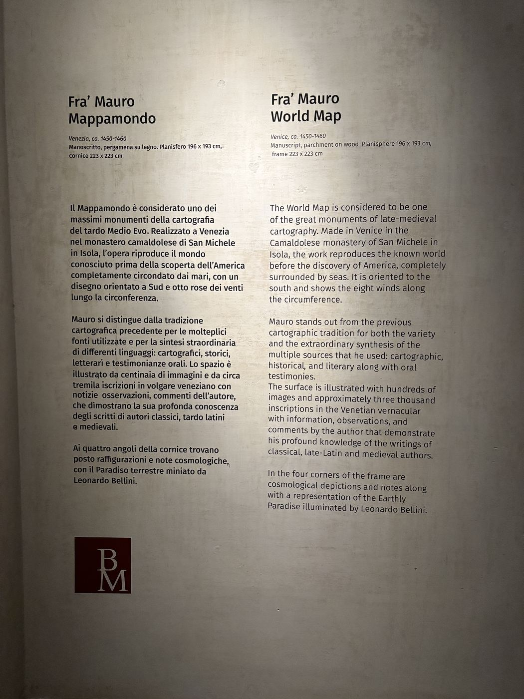
Close up, it rewards the kind of squinting a phone camera makes possible. One detail shows the Java/China coast, dense with tiny walled cities and a marginal note in Venetian script — the sort of place-by-place annotation that made this map so unusually well-informed for its time. Another shows northern Europe — Prussia, the Baltic (Sinus Germanicus), Gothia, Norvegia, Svetia, Islant — with two little cog-ships riding the waves and a note warning that this particular sea isn't one you'd navigate by chart or compass. A third shows the Mediterranean and North Africa — Cirenaica, Libia, Getulia, Numidia — with Anglia and Scotia just visible in the corner, and ships dotted across a sea that, on this map, is still very much the center of the known world.
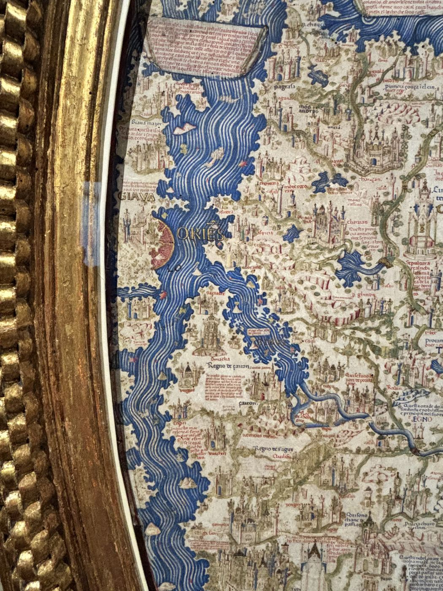
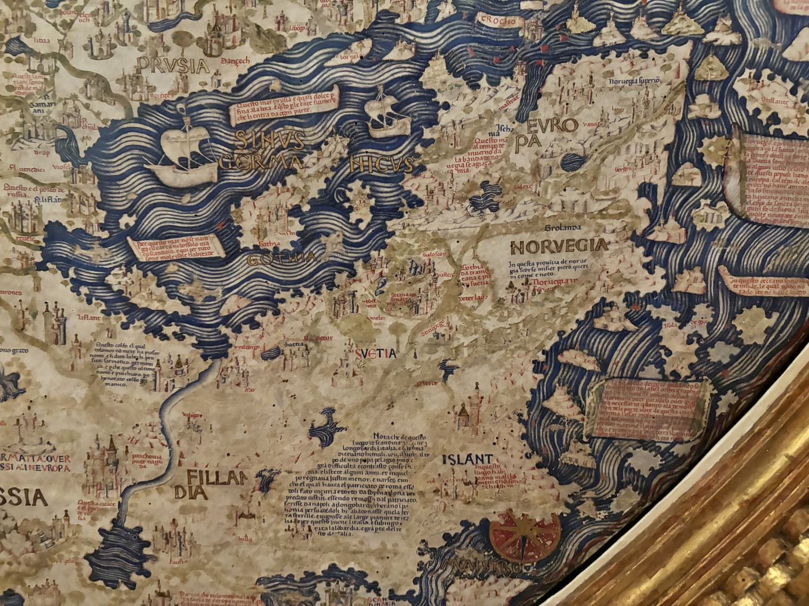
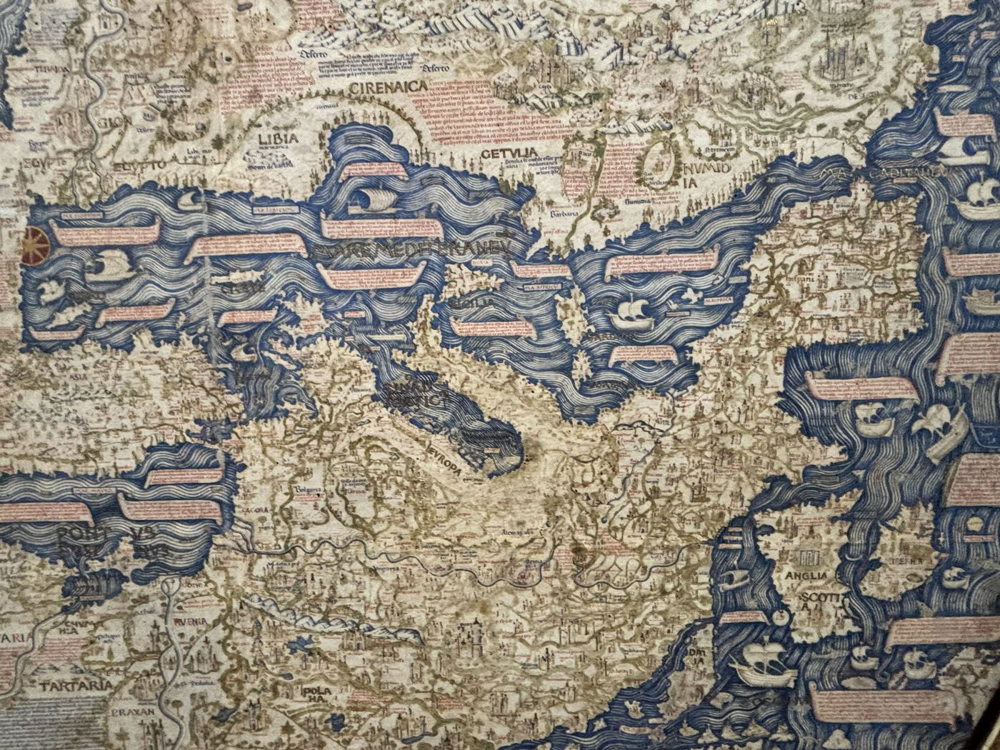
A whole case of Renaissance dinnerware painted with scenes from Ovid's Metamorphoses — mythological comic-book panels, meant to give Renaissance dinner guests something to discuss between courses. Mikael's running commentary, read cold, undersold the myths in the funniest possible way; decoded, they're a proper mythological storyboard.
First up: "There's these treeguys on these pastaplates." Two plates side by side. On the left, Echo and Narcissus — the labels spell it out: ECHO, the nymph who could only repeat other people's words, wasting away with heartbreak while NARCISO gazes at his own reflection in the water. On the right, a couple merging into two intertwined trees, with a dragon coiled at their feet and the names PELIO and TETIS inscribed below — Peleus and Thetis, the mortal and the shape-shifting sea nymph whose forced courtship (Peleus had to hold on through her transformations, dragon included, to win her) produced Achilles. The tree imagery reads more like an echo of Philemon and Baucis, but the plate's own inscription points to Peleus and Thetis, dragon and all.
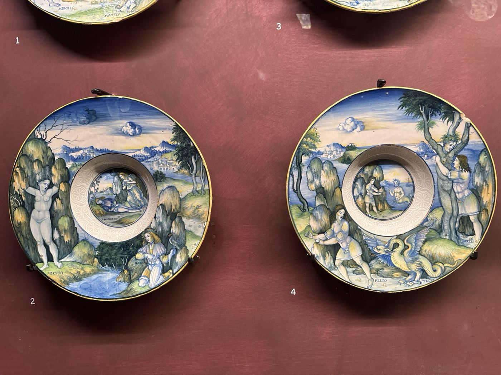
Next: "This guy's being harassed by a swan!" Correctly clocked as Leda and the Swan — Zeus in disguise, approaching Leda, queen of Sparta. Ancient sources disagree on how willing an encounter it was, and plenty of retellings are frank that it wasn't. The pair of eggs that followed hatched Helen of Troy, Clytemnestra, and the twins Castor and Pollux. The wide border scene — a lute player, Cupid handing something to a fashionable gentleman — has nothing to do with the myth in the center; Renaissance maiolica routinely paired a classical medallion with an unrelated contemporary street scene, mixing myth and dinner-table Venice on the same plate.
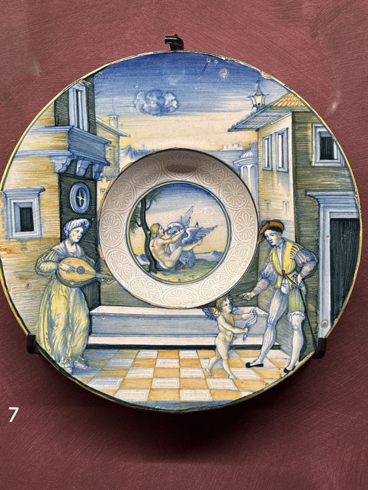
Then: "He started a fire, she's giving him a soundtrack?" Best read as Orpheus, on his way into the Underworld — the bowed instrument standing in for his lyre (Renaissance painters routinely modernized it), the bearded ferryman in the boat almost certainly Charon, the burning city behind him standing for death and the world being left behind rather than any specific blaze. The next plate confirms it.
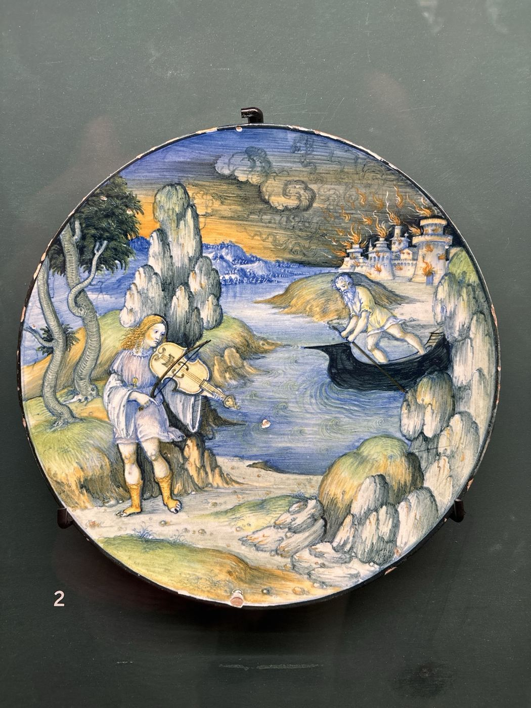
"What?" — the plate that makes the previous one click. Orpheus leading Eurydice, in white, out of the Underworld, a horned guardian watching from a doorway and Charon's boat still visible on the water behind them. This is the moment just before the myth turns tragic: Hades had agreed to release Eurydice on the condition that Orpheus not look back until they'd both left the Underworld. He does, moments later, and loses her again — permanently, this time.
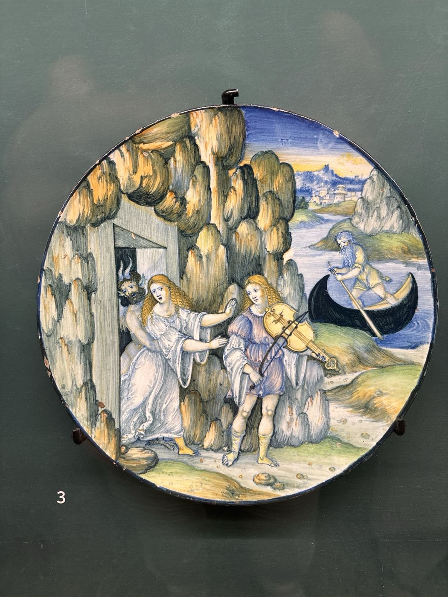
Last of the Orpheus run: "Looks like she's really bad player." Two plates, and the joke undersells both. On the left, Orpheus playing in the wilderness after losing Eurydice for good — his music so beautiful that deer, a lion, even rabbits gather to listen, the natural world charmed into stillness. On the right, the actual "one-star review": the Maenads, ecstatic followers of Dionysus, turning on him — enraged, in various tellings, either by his rejection of other women after Eurydice or his neglect of Dionysus's worship — clubs raised, his instrument already lying broken on the ground. They kill him and tear him apart; his severed head is said to have kept singing as it floated down the river to Lesbos. Renaissance artists returned to Orpheus again and again because his story cuts both ways: music that can tame wild animals, but not human violence.
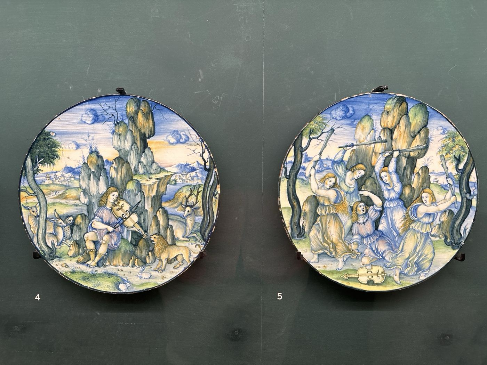
"They got caught 😏" — reasonable guess, wrong scene. The inscription reads SALOMONI: King Solomon, carrying a book as a symbol of wisdom, arriving at a canopied bed where a young couple stand close together, the woman apparently pregnant. Without the museum's own label it's hard to pin down which biblical episode this illustrates — Solomon turns up in several involving judgment, marriage, or wisdom — but it's a visit or a judgment being rendered, not an accidental catch. Maiolica of this kind mixed biblical scenes in with the classical ones without much ceremony.
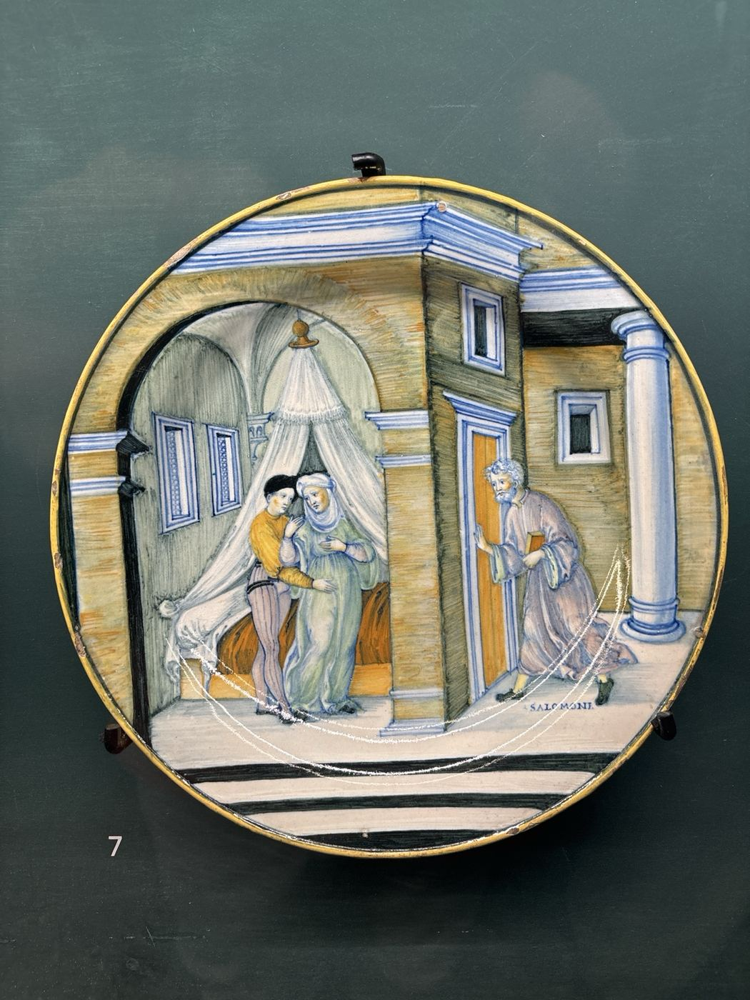
And last: "Huge man-baby." Not a myth at all — an allegory of the Four Seasons, the inscription spelling it out along the bottom edge: PRIMAVERA, STATE, VTTVNO, INVIERNO. A youthful woman with Cupid and a bow for Spring; a wheat-crowned figure with a sickle for Summer; a plump, grape-wreathed figure — the man-baby in question — for Autumn, deliberately rounded to signal abundance and the wine harvest; and a bundled, shivering old woman for Winter. Read left to right, it's a small, complete cycle of the year, slim to round to cold, and a fittingly indulgent note to end the case on.
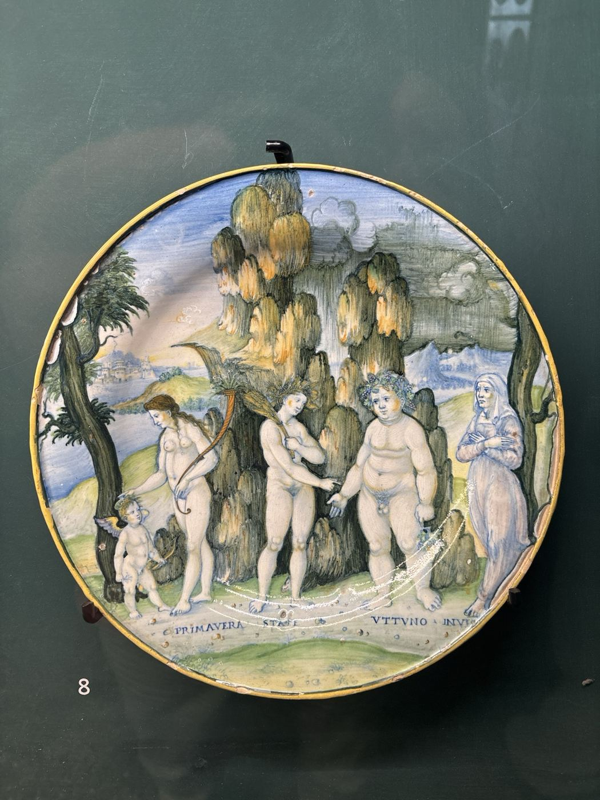
A bronze roundel, easy to misread: "IO SON FINE" looked, for a hopeful second, like Italian for "I'm fine, son." It isn't. It's Renaissance Italian for "I am the end" — Death, speaking in the first person. A skull sits at the center; an old, emaciated man covers his face beside it; Cupid slouches on the other side with his torch, love running out of fuel along with everything else. An inscribed date along the bottom edge reads something like M·CCCC·LXVI — 1466, give or take a numeral worn smooth by five centuries of thumbs. Textbook memento mori: wealth fades, beauty fades, love fades, and this is the one certainty underneath all of it — delivered, appropriately, with a skull for a footstool.
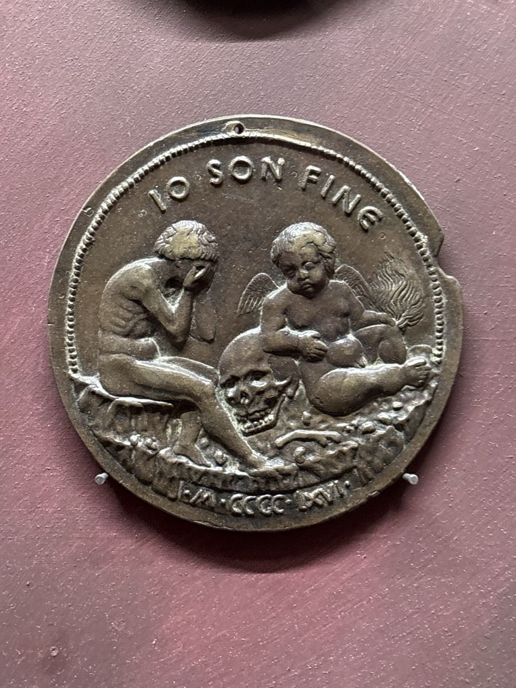
A pair of small gilt bronze statuettes, each holding a club carved with a spiral, stepped pattern — a Renaissance take on Hercules's weapon of choice, confirmed by the second figure mid-swing over his shoulder. Neither one has the six-pack-and-cape physique that modern Hercules illustrations default to; both are built more like Olympic strongmen than superheroes — thick through the chest and waist, all raw power over visible definition, closer to how antiquity actually imagined a man capable of the Twelve Labors: strong enough to move mountains, not particularly worried about how he looked doing it.
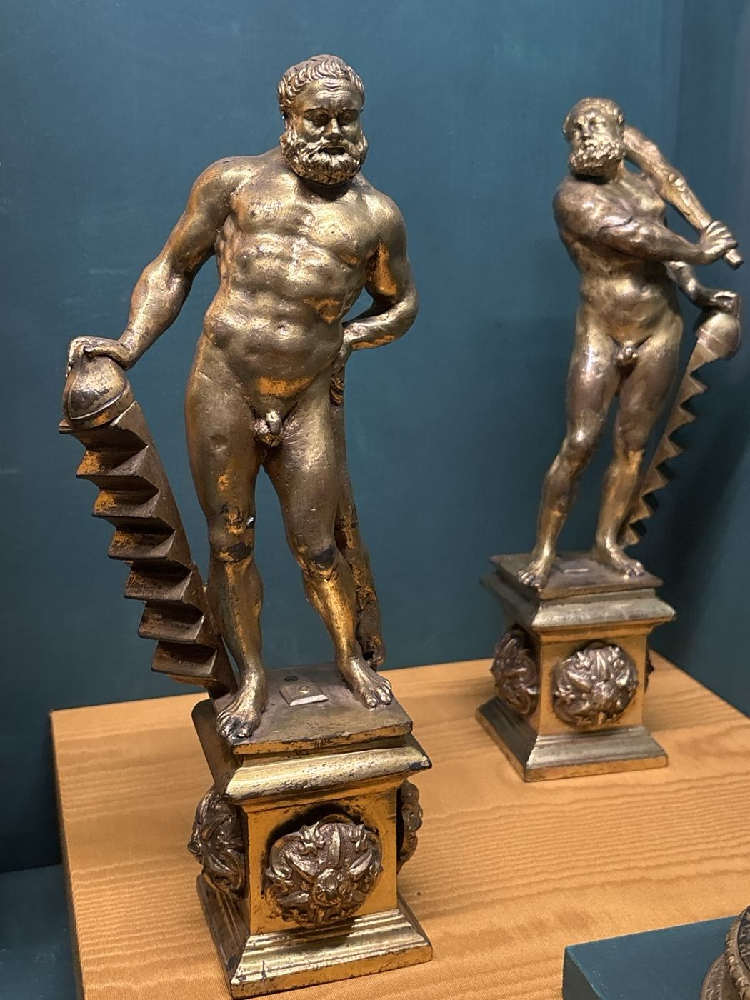
Standing nearby, a second bronze pair reads less like myth and more like a moment caught mid-conversation: a woman in the classic Venus Pudica pose — one hand at her breast, the other gathering drapery at her hip, modesty as performance rather than actual concealment — half-turned away from a bearded man leaning in toward her, holding some kind of staff or branch, cropped out of frame. Five hundred years on, the body language still reads perfectly: him leaning in, her not quite having it. Whatever mythological pairing the sculptor intended — Venus and Mars, Venus and a satyr, something else — the small human moment survived the centuries better than the iconography did.
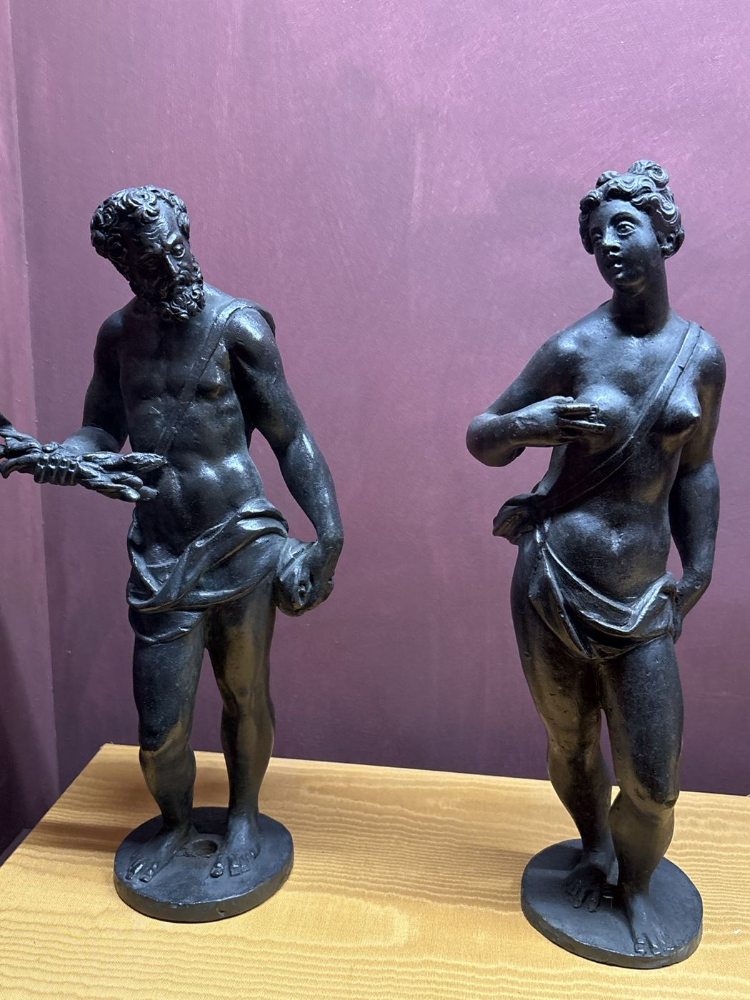
A large painting, dense enough to reward ten minutes of close-up photography, showing the Caccia dei Tori — the "Hunt of the Bulls," one of the biggest public spectacles of Renaissance and Baroque Venice. Less a hunt than bull-baiting crossed with Carnival: bulls tied by the horns and worked by rope-handlers called tiratori, mastiffs set loose to harass them, masked clowns weaving through the chaos, and every balcony and temporary grandstand around the campo packed with spectators, the good seats reserved for whoever could pay for them.
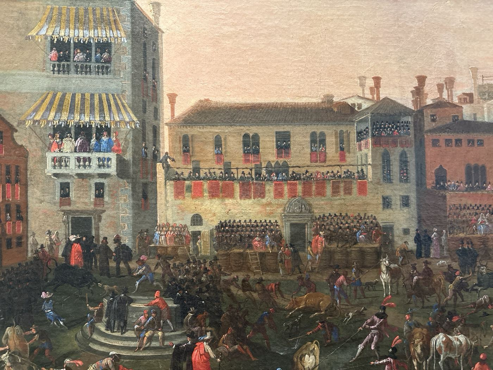
Other corners of the canvas catch the wider scene and the danger both: a milling crowd of performers, animals, and onlookers stretching back across the square; ropes pulled taut from both sides as dogs dart in and a bull fights the handlers; and, in the worst moment on the canvas, outright panic — people diving clear, a fallen figure's jewelry spilled across the ground, a bull barreling straight through the crowd with no one quite in control of it.
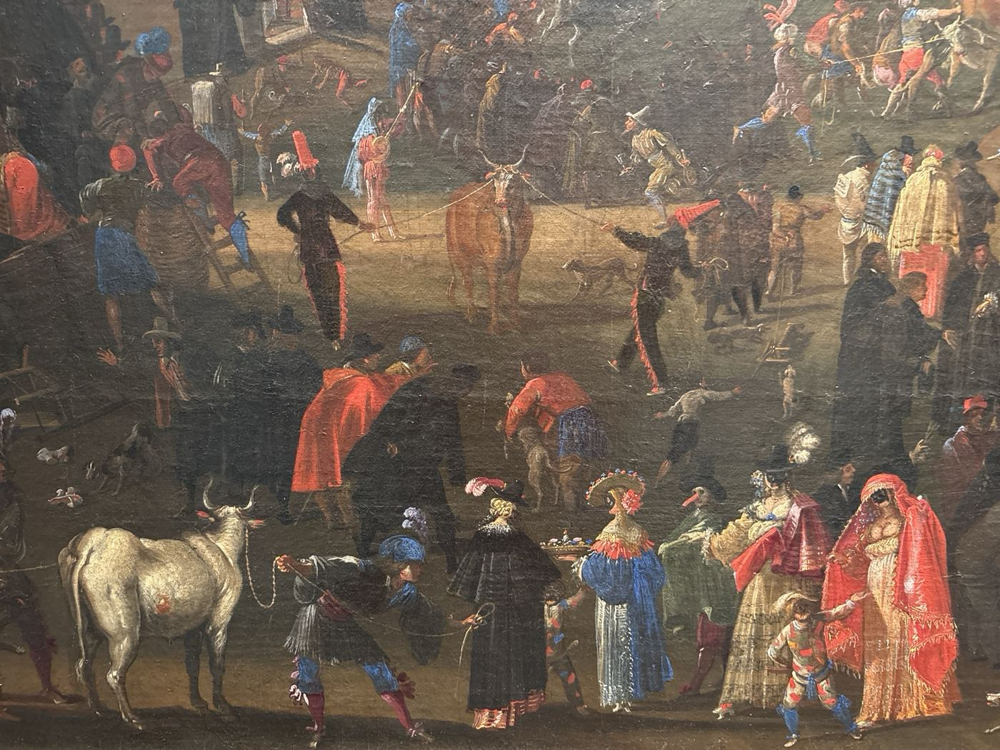
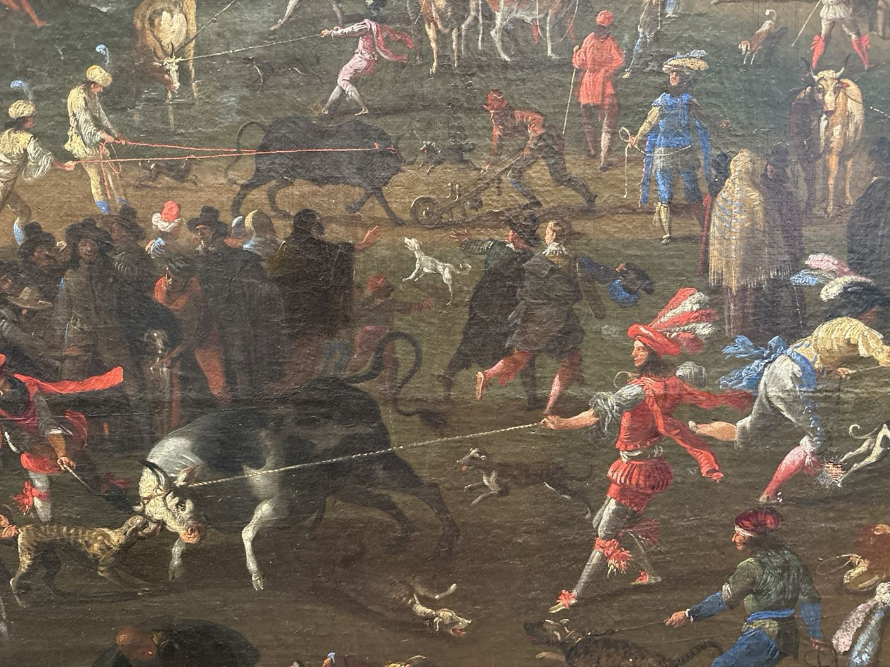
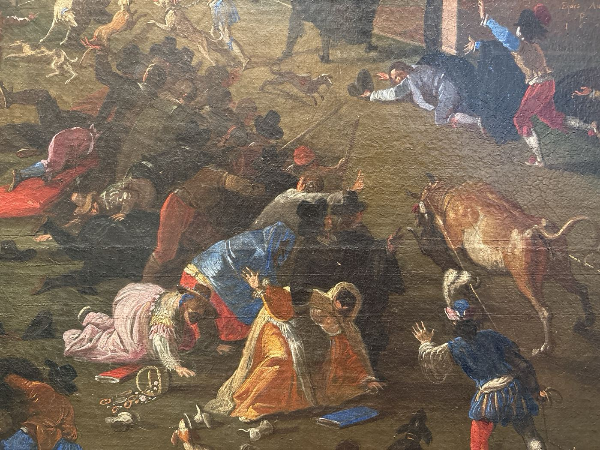
The bull hunts were banned in Campo San Polo in 1611, though they carried on elsewhere in the city for a long while after; a fatal crowd accident in 1802 finally put an end to the tradition altogether. Whatever else it was, this particular painting is basically a 17th-century "spot the detail" puzzle — gamblers, noblewomen on balconies, children pushing too close, someone's dog stealing the show in a corner nobody's looking at.
A carved stone relief of a snarling face, mouth cut through as a slot, mounted above an inscribed panel: a Bocca di Leone, one of the Venetian Republic's semi-famous instruments of state — a physical letterbox for anonymous written accusations against corrupt officials. The inscription (in period Venetian) reads roughly: secret denunciations against ministers and others who commit fraud against the public, or who maintain private and secret dealings, correspondence, or bribes. Not a suggestion box for bad soup — a formal channel for reporting embezzlement, smuggling, or backroom dealing with foreign powers, complaint slipped through a stone mouth into the machinery of the Republic. Venice took the risk of frivolous or malicious accusations seriously enough to build in some scrutiny before acting on them, which makes this less a secret-police prop than an early, oddly literal anti-corruption hotline.
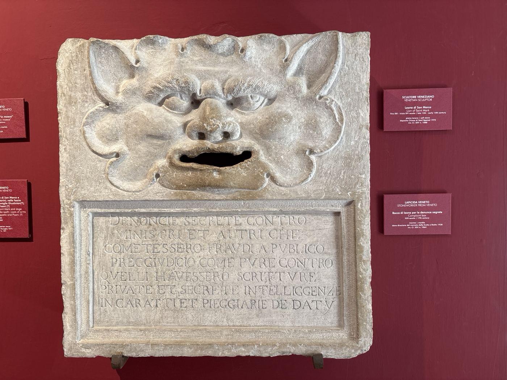
The three pieces on Meister's debut program each turned out to have a real story behind them — worth pulling out on their own rather than squeezed into the day's account.
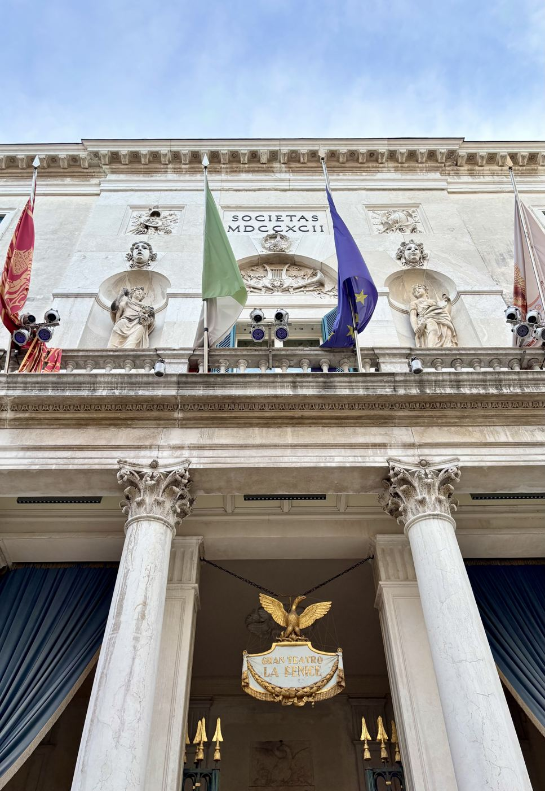
Don Juan, Op. 20 — Richard Strauss.
Written in 1888, when Strauss was all of 24, and an instant sensation — the piece that put him on the map as the most audacious young composer in Europe. It's built on Nikolaus Lenau's telling of the Don Juan legend, which reworks the old cruel-seducer myth into something closer to tragedy: this Don Juan is an idealist, chasing an impossible standard of "perfect womanhood," discarding every woman the moment she turns out to be merely human rather than the ideal he's after. By the end he's exhausted by the futility of the search, and when a duel finally comes for him, he doesn't fight to survive — he lets himself be killed, death arriving almost as relief.
The Midday Witch (Polednice), Op. 108 — Antonín Dvořák.
A late piece, from 1896, written after Dvořák came home to Bohemia from his years in America and turned back toward Czech folklore for material. The source is a genuinely unsettling poem by Karel Jaromír Erben: a mother, worn down and trying to get lunch on the table, snaps at her misbehaving toddler that the Midday Witch will come take him away if he doesn't stop. Noon strikes. The witch actually appears. The mother, panicking, grabs her child and clutches him to her chest to shield him from it — and when the father comes home, he finds her collapsed on the floor, having smothered their child to death in her own terror. Not a folk tale with a moral so much as a horror story with a body count, scored for full orchestra.
Symphony No. 2 in D major, Op. 73 — Johannes Brahms.
The contrast with the piece it's usually paired against in program notes is the whole point: Brahms spent a tortured 21 years finishing his First Symphony, terrified of inviting comparison to Beethoven. The Second arrived almost the opposite way — a relaxed summer holiday on the shores of the Wörthersee in Austria in 1877, and the symphony came together in a matter of months. It's "absolute music" in the strict sense: no plot, no characters, nothing for the program notes to summarize — the closest thing it has to a story is the lake, the mountain air, and the mood of that particular summer. Brahms joked to his publisher that the melodies were so sunny he worried the notes might float right off the page, though there are quieter, shadowed passages folded in underneath — nature's unpredictability, smuggled into an otherwise cheerful piece.
The Three Composers
Strauss and Dvořák both belonged to the so-called "New German" school, which held that music should tell a literal story; Brahms stood for the opposing "absolute music" camp, insisting a symphony could and should stand on pure form with no narrative attached. Putting all three back to back on one program plays that old rivalry out in real time, while making the case that both sides were chasing the same thing — big, unguarded orchestral feeling — by different routes.
The personal dynamics underneath that split are its own story. Brahms and Dvořák were the warm relationship: Brahms sat on the jury that awarded Dvořák the Austrian State Stipendium in the 1870s, was startled by how good the unknown Bohemian's submissions were, and used his own standing to push his publisher, Simrock, to take Dvořák on — the deal that produced the Slavonic Dances and effectively launched Dvořák internationally. It wasn't just a professional favor either; Brahms proofread Dvořák's scores, lent him money at points, and by most accounts the friendship stayed genuinely affectionate for the rest of Brahms's life, despite Brahms being a lifelong bachelor with little patience for religion and Dvořák a devoutly Catholic family man — an odd-couple friendship that worked anyway.
Strauss's relationship with Brahms ran colder. As a teenager Strauss was steeped in Brahms's style by his father, a conservative horn player who idolized Brahms and distrusted the Wagner camp on principle; the young Strauss dutifully wrote in a Brahmsian idiom for years, and even showed Brahms an early symphony in person, only to reportedly get fairly blunt, unimpressed feedback back. Not long after, under the influence of the conductor and composer Alexander Ritter, Strauss defected wholesale to the Liszt–Wagner "New German" camp Brahms had spent his career defining himself against — which makes Don Juan, the piece on this very program, basically Strauss's declaration of independence from the style his father raised him on.
Dvořák and Strauss, by contrast, barely factor into each other's story directly — mutual respect from a distance, two composers on the same side of the programmatic-music divide without much personal history to speak of. So the program isn't just a philosophical rivalry laid out side by side; it's also, quietly, a mentor who got it right (Brahms and Dvořák) sitting next to a mentorship that didn't take (Brahms and Strauss).
And as a debut program specifically, it's a shrewd piece of self-scouting — Don Juan tests the orchestra's raw speed and the horn section, Polednice asks the woodwinds to act like a theater troupe conjuring dread out of nothing, and the Brahms demands the kind of warm, unified string tone that can't be faked. Three pieces, three different muscles, all flexed in front of a new audience — about as close as classical music gets to a job interview.
The main entrance of the University of Padova sits on via VIII Febbraio, wedged between the Caffè Pedrocchi and the town hall, and it would be easy to walk straight through it on the way to the anatomical theatre. Worth stopping. The whole threshold — doors, atrium, staircase — is one continuous war memorial, layered from 1848 to 1945, and the university wears it quietly.
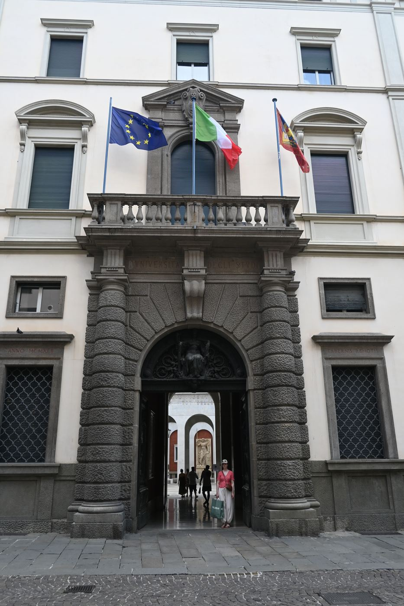
The doors themselves are the memorial to the First World War: cast from the bronze of Austrian cannons captured in the fighting, and carrying, panel by panel, the names of the university's students who did not come back. The idea came from Giuseppe Sarti, director of the university secretariat, and student committees helped raise the funds. It took two national competitions to get them — the first, in 1920–21, ended with no winner at all; the second, judged by a jury that included Leonardo Bistolfi, was won unanimously by the sculptor Gaetano Orsolini (Montegiorgio 1884 – Turin 1954) and the architect-decorator Giulio Casanova (Minerbio 1875 – Bologna 1961): Orsolini modelled the figures, Casanova the ornamental frame around them. The doors were made in 1922–23 and inaugurated with King Vittorio Emanuele III in attendance.
Each leaf carries one allegorical youth holding up a long scroll of names. Under PRO PATRIA, an unarmored figure in heavy drapery, a great palm frond — the old sign of sacrifice — resting against his shoulder, a lion's pelt underfoot. Under PRO IVRE, his counterpart in mail, sword at his hip and shield behind him: the law, armed to defend itself. The names are not simply engraved into the doors — the figures physically hold them, as if memory itself were being carried. Around the borders run medallions of the faculties: the scales of law, the caduceus of medicine, Hygieia's bowl with its serpent, a Minerva head, and — bluntest of all — a skull resting on a book.
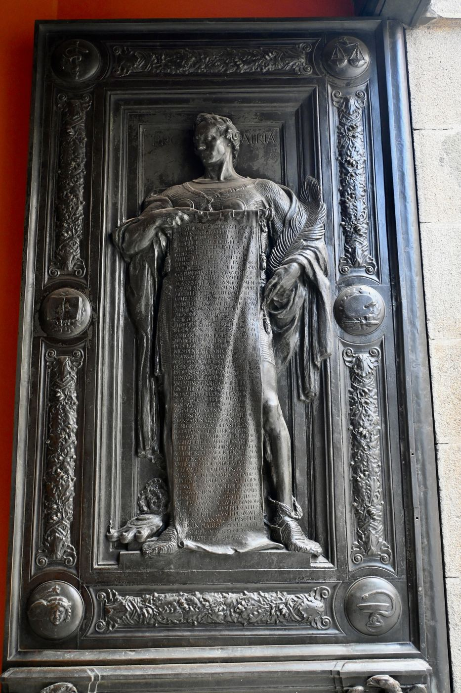
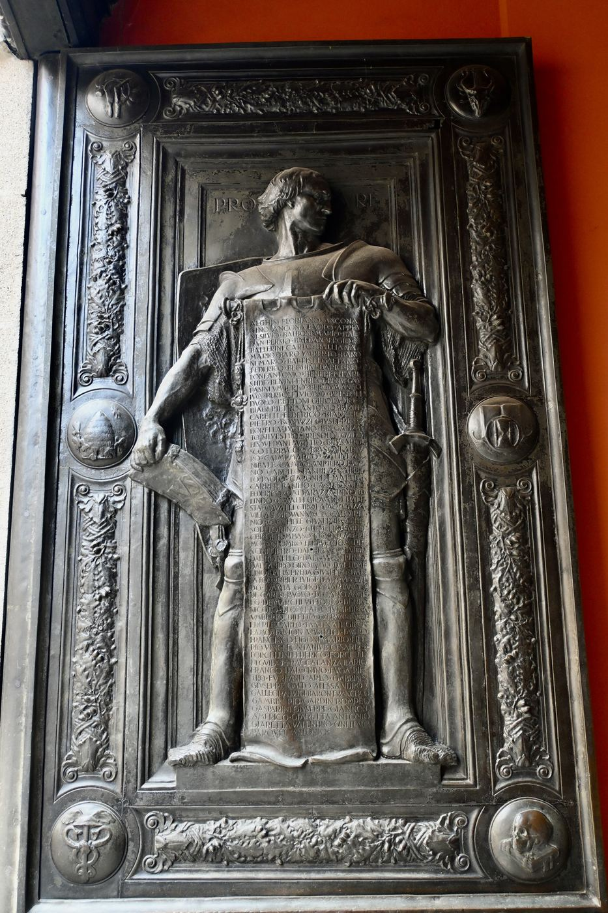
A note on sources, since these doors turned into a small research saga. The phone tour guide credited them to Gaetano Orsolini and a "Maria Teresa Orsolini-Casanova" — a name that exists nowhere — and described the two figures exactly swapped: the armored one as Patria, the draped one as Iure. Half an hour of searching found the cannons, the competition, and the jury, but no artist. Then the atrium's own information panel ended the argument: è opera di G. Orsolini e G. Casanova, 1922–23. Right surnames, invented first name, wrong figures. The doors, it turns out, keep their makers almost as quietly as their dead.
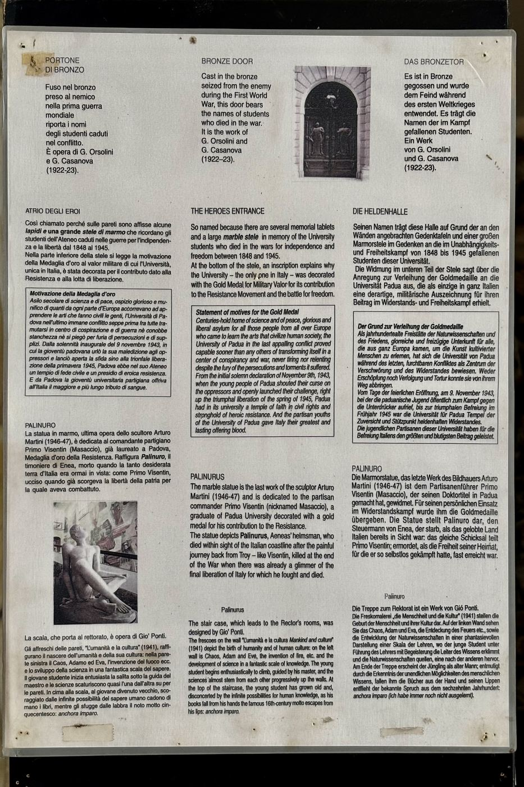
Inside, the walls carry the rest of the century. A marble tablet from 1884 lists the students who fell in the wars of the Risorgimento, 1848 to 1866, each with his hometown and the place he died — Sorio, Marghera, the Volturno, Ledro — boys from Verona and Udine and Trieste dying at Rome and Venice and Monte Suello. Facing them, a plainer slab from May 1949 for the fallen of the Second World War, with a Latin line adapted from Virgil: hic doctrina fidesque, at bello vivida virtus — here learning and faith, but in war, living courage.
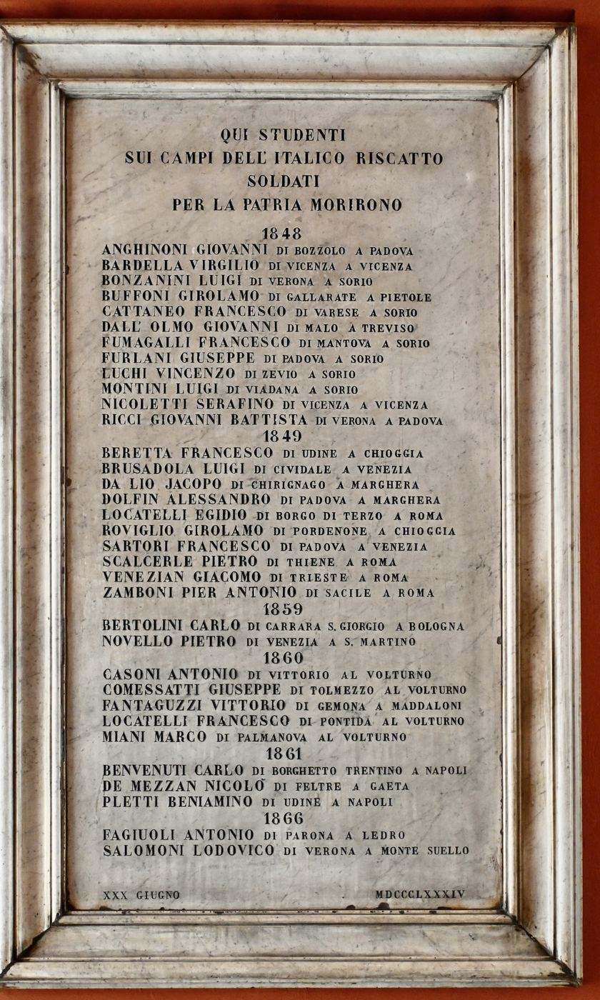
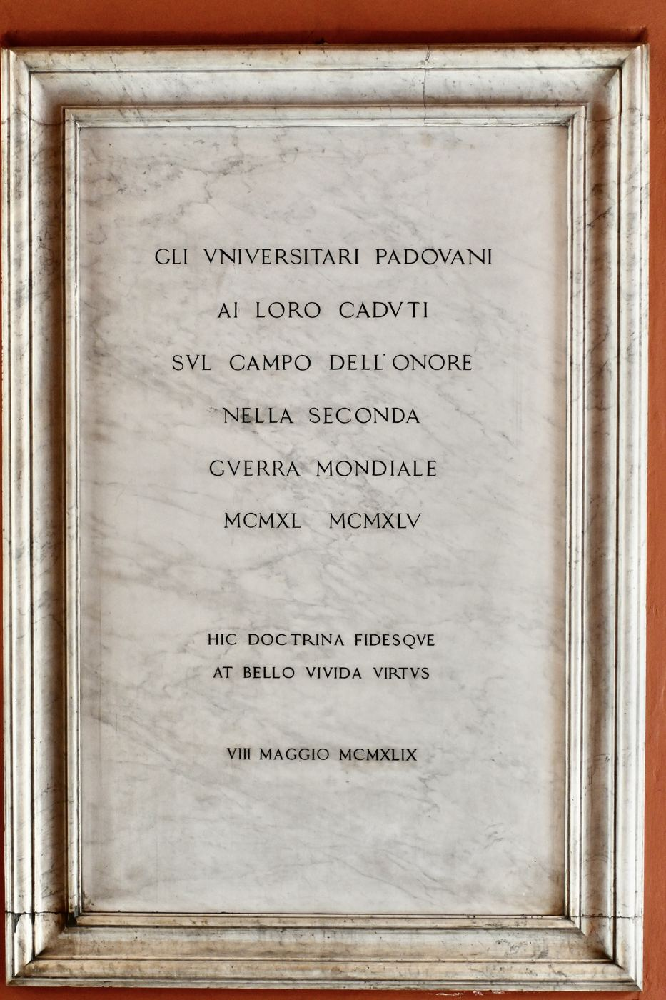
The atrium's name is earned: for what happened here between 1943 and 1945, the University of Padova is the only university in Italy to hold the Gold Medal of Military Valour. The citation, carved on the great marble stele, calls the university a centuries-old refuge of science and peace that, in the last terrible conflict, turned itself into a center of conspiracy and resistance — from the rector's defiant inaugural address of 9 November 1943 to the liberation in the spring of 1945.
At the foot of the rectorate staircase crouches Palinuro, the last work of Arturo Martini (1946–47). It is dedicated to the partisan commander Primo Visentin, called Masaccio, a Padova graduate and Gold Medal of the Resistance. Martini chose Palinurus, Aeneas' helmsman, who fell into the sea and died when the Italian coast was finally in sight — as Visentin was killed in the very last days of the war, with the liberation he had fought for already visible. The white marble figure twists upward, looking at something the rest of us can't see.
The staircase itself — the Scala del Sapere — is Gio Ponti's, its walls frescoed in 1941 with L'umanità e la cultura: chaos, Adam and Eve, the discovery of fire, and then the sciences climbing the wall one out of another as a young student ascends under his teacher's guidance. At the top of the stairs the student has become an old man, his books falling from his hands, and from his lips escapes the old motto: anchora imparo — I am still learning.
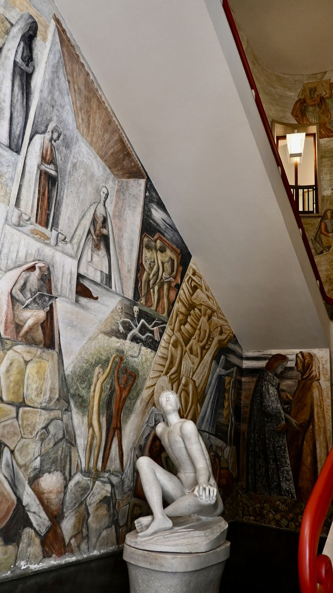
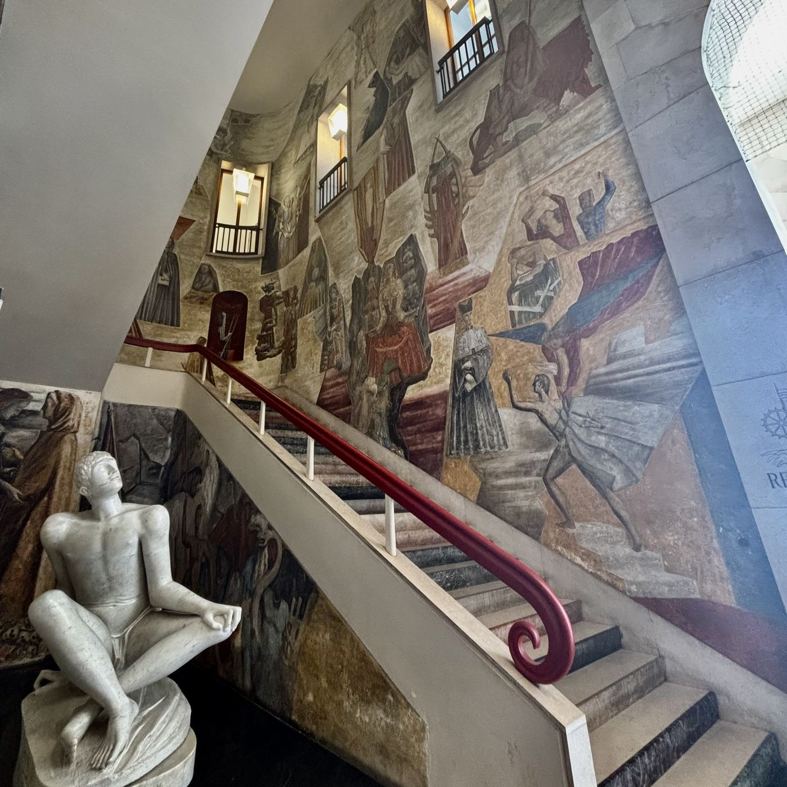